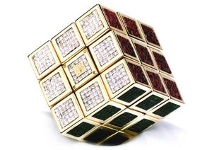
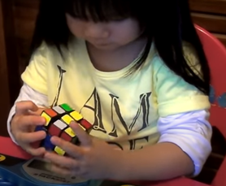

Données chiffrées en rapport avec les Rubik's Cube :
- 100 millions de cubes vendus entre 1980 et 1982.
- 100 000 exemplaires vendus en 2002.
- 500 000 exemplaires vendus en 2015 en France, ce qui représente 8,5 millions d'euros de vente.
- 400 millions de cubes vendus jusqu'en 2016.
- Croissance de 39% de la catégorie "casse-têtes" dans 11 pays.
- Il existe 3 674 160 configurations pour le cube 2x2x2.
- Il existe 43 252 003 274 489 856 000 (4,3x1019) configurations pour le cube 3x3x3.
- Il existe 7 401 196 841 564 901 869 874 093 974 498 574 336 000 000 000 (7,4x1045) configurations pour le cube 4x4x4.
- Il existe 282 870 942 277 741 856 536 180 333 107 150 328 293 127 731 985 672 134 721 536 000 000 000 000 000 (2,8x1074) configurations pour le cube 5x5x5.
- Il serait, en théorie, possible de résoudre le cube en 22 mouvements quelle que soit la configuration. Les algorithmes permettant ceci s'appellent les "God's algorithms" (algorithmes de Dieu), mais ceux-ci ne sont pas encore connus.
- Le plus grand cube construit mesure 3,52 m de côté.
- Le plus petit cube mesure 10 mm de côté.
- Le cube le plus cher est le "Masterpiece Cube". Il vaut environ 1,5 million de dollars. Ce cube, fonctionnel et à taille réelle, est composé de 22,5 carats d'améthyste, de 34 carats de rubis, de 34 carats d'émeraude, le tout serti dans 18 carats d'or.
- 1 personne sur 5 dans le monde s'est déjà amusée avec un Rubik's Cube.
- Le plus jeune résolveur du cube 3x3x3 est une fille de 2 ans. Elle a résolu le cube en 1 minute 10 secondes et 84 centièmes grâce à la méthode intermédiaire.
- Plus de 180 000 tutoriels sont présents sur YouTube.

